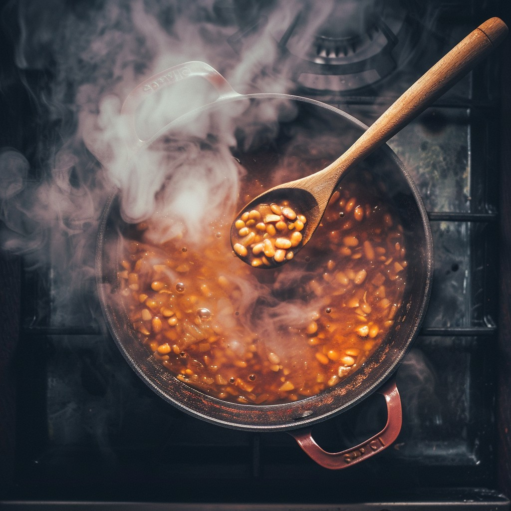

Beans

List of ingridients
- Cooking oil
- 2l of water
- 3 tomatoes
- 1 onion
- Galic
- Salt
The steps to make Beans
- Put 1 cup of beans in the pot with 3 cups of water
- Add 1 table spoon of water and keep on adding water until 2 hours
- Put the beans in bolw and put one tablespoon of cooking oil in the pot
- Cut tomatoes and onions and put them in the hot to make soup
- On that soup add reasonable salt and put 1 galic
- Leave it on the stove for 5 minutes and you are ready to enjoy